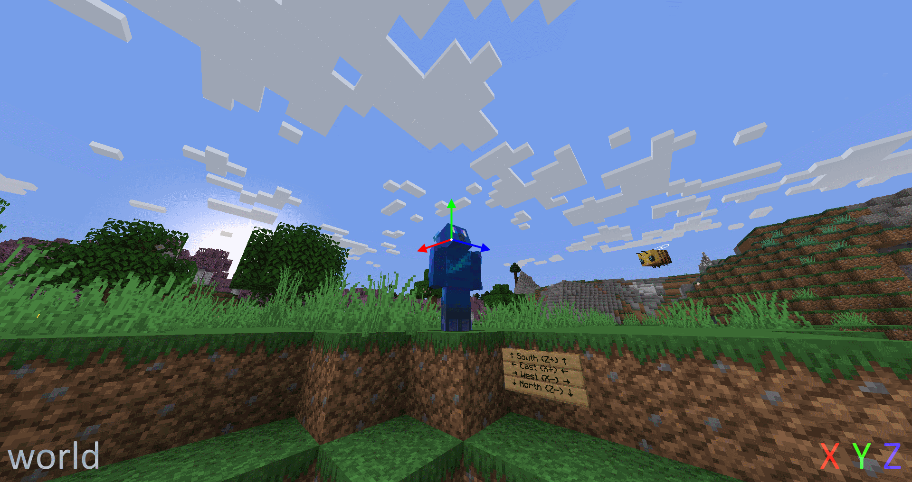

Space
A String that defines which coordinate system is used for directions. Currently, only used in the Add Velocity (Entity Action Type).
Values
| Value | Description |
|---|---|
world |
The axes are global: x points to west (negative) or east (positive), y points to bottom (negative) or top (positive) and z points to north (negative) or south (positive). |
local |
The axes are local to the entity: x points to its left side and is always horizontal, y points to the top of the entity's head and z points to the direction the entity is facing. |
local_horizontal |
Same as local, except it considers the vertical length of the direction of the entity is facing to be 0, resulting in z being projected (flattened out) onto the horizontal plane, making it shorter. x and y also become shorter by the same amount and y always points upwards. The axes shrink as the direction the entity is facing diverges from being horizontal. (e.g: if the entity is looking straight up or straight down, the axes will have a length of 0, akin to forcing x, y and z to be 0) |
local_horizontal_normalized |
Same as local_horizontal, except the axes are normalized. (e.g: the axes' length are brought back to its previous length of 1 if it's of non-zero length) |
velocity |
The axes are local to the entity's velocity, similar to local. If the velocity is purely vertical, the way the entity is pointing is used to determine the direction of x and y instead of the velocity. The axes scale based on how fast the entity is moving. (e.g: if the entity is not moving, the axes will have a length of 0, akin to forcing x, y and z to be 0) |
velocity_normalized |
Same as velocity, except the axes are normalized. (e.g: the axes' length are brought back to its previous length of 1 if it's of non-zero length, making it not depend on the speed of the entity's movement, only as long as the entity is moving) |
velocity_horizontal |
Same as velocity, except the vertical velocity is considered to be 0. |
velocity_horizontal_normalized |
Same as velocity_horizontal, except the axes are normalized. (e.g: the axes' length are brought back to its previous length of 1 if it's of non-zero length) |
